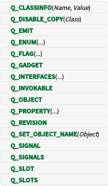

QObject宏
什么是宏？我想大家应该很清楚吧。这里还是简单说明一下：C++宏定义就是将一个标识符定义为一个字符串，源程序中的该标识符均以指定的字符串来代替。
在基类QObject里面也有很多宏定义，下面是我学习的一些资料。
下图是QObject里面所有的宏定义，结合我的学习理解，我们来一个个看这些宏定义。

- Q_CLASSINFO(Name, Value)
该宏将额外的信息与类相关联，该类可以使用QObject :: metaObject()。额外的信息采用Name字符串和Value字符串的形式。 我的理解就是通过此宏可以在类中加入一些相关的自己需要说明的信息。
class MyClass : public QObject { Q_OBJECT Q_CLASSINFO("Author", "Pierre Gendron") //加入作者的信息 Q_CLASSINFO("URL", "http://www.my-organization.qc.ca")//加入相关的网站 public: ... };
Q_DISABLE_COPY(Class) 给定类禁止复制构造函数和赋值运算符 QObject的子类的实例不应该被认为是可以复制或分配的值，而是作为唯一标识。 这意味着当您创建自己的QObject子类（直接或间接的）时， 不应该给它一个复制构造函数或赋值运算符。 但是，如果您错误地编写了一些需要复制构造函数或赋值操作符的代码（这很容易），那么您的编译器会为您创建一个可执行代码，这可能还不够。你必须做更多的事情。
在私有部分中声明一个复制构造函数和赋值运算符，因此如果错误地使用它们，编译器将报告错误class MyClass : public QObject { private: Q_DISABLE_COPY(MyClass) };
不要这样做。大多数编译器将生成使用复制构造函数的代码，因此将会报告隐私违规错误，但是您的C ++编译器不需要以特定方式为此语句生成代码。 它可以生成不使用复制构造函数和我们私有的赋值运算符的代码。在这种情况下，不会报告错误，但是当您调用成员函数时，您的应用程序可能会崩溃class MyClass : public QObject { private: MyClass(const MyClass &); MyClass &operator=(const MyClass &); };对于这个宏我并不是很懂，这只是将官方的文档搬过来而已，有理解的请教我
Q_EMIT 当您要使用第三方信号/插槽机制的Qt信号和插槽时，使用此宏替换发射信号的关键字emit。 该宏通常用于没有关键字与指定CONFIG的变量中的.pro文件，但依然能够使用当没有关键字被指定的时候。
Q_ENUM(...) 该宏使用元对象系统注册枚举类型。必须在枚举声明之后放在具有Q_OBJECT或Q_GADGET宏的类中。对于命名空间，最好使用Q_ENUM_NS替代。
使用Q_ENUM声明的枚举将其QMetaEnum注册在封闭的QMetaObject中。当然也可以使用QMetaEnum :: fromType（）获取QMetaEnum。注册的枚举也自动注册到Qt元类型系统，使得它们被称为QMetaType，而不需要使用Q_DECLARE_METATYPE（）。 我的理解就是通过此宏定义可以将枚举注册到QMetaObject中。class MyClass : public QObject { Q_OBJECT public: MyClass(QObject *parent = 0); ~MyClass(); enum Priority { High, Low, VeryHigh, VeryLow }; //枚举优先级类型 Q_ENUM(Priority) //注册枚举类型 void setPriority(Priority priority); //设置优先级 Priority priority() const; };Q_FLAG(...) 该宏使用元对象系统注册单个标志类型。它通常用于类定义，以声明给定枚举的值可以用作标志，并使用按位或运算符组合。 class QLibrary : public QObject { Q_OBJECT public: ... enum LoadHint { ResolveAllSymbolsHint = 0x01, ExportExternalSymbolsHint = 0x02, LoadArchiveMemberHint = 0x04 }; Q_DECLARE_FLAGS(LoadHints, LoadHint) Q_FLAG(LoadHints) ... } 标志本身的声明在QLibrary类本身的公共部分中使用Q_DECLARE_FLAGS（）宏执行。
Q_GADGET 宏是Q_OBJECT宏的较轻版本，不适用于不从QObject继承的类，但仍然要使用QMetaObject提供的一些反射功能。就像Q_OBJECT宏一样，它必须出现在类定义的私有部分。 Q_GADGET可以具有Q_ENUM，Q_PROPERTY和Q_INVOKABLE，但它们不能有信号或插槽 Q_GADGET提供了一个类成员staticMetaObject，可用。staticMetaObject是QMetaObject类型，提供对使用Q_ENUMS声明的枚举的访问。
Q_INTERFACES(...) 这个宏告诉Qt该类实现的接口。这是在实现插件时使用的。
class BasicToolsPlugin : public QObject, public BrushInterface, public ShapeInterface, public FilterInterface { Q_OBJECT Q_PLUGIN_METADATA(IID "org.qt-project.Qt.Examples.PlugAndPaint.BrushInterface" FILE "basictools.json") Q_INTERFACES(BrushInterface ShapeInterface FilterInterface) public: ... };
Q_INVOKABLE 将此宏应用于成员函数的声明，以允许通过元对象系统调用它们，该宏将在返回类型之前写入。
该invokableMethod()函数使用Q_INVOKABLE标记，导致它被注册到元对象系统，并使用QMetaObject :: invokeMethod（）调用该函数。由于normalMethod()函数没有以这种方式注册，所以不能使用QMetaObject :: invokeMethod（）来调用。class Window : public QWidget { Q_OBJECT public: Window(); void normalMethod(); Q_INVOKABLE void invokableMethod(); };Q_OBJECT Q_OBJECT宏必须出现在类定义的私有部分，它声明自己的信号和插槽，或者使用Qt的元对象系统提供的其他服务。Q_OBJECT宏前面已经详细分析了，这里就不再赘述了。
Q_PROPERTY(...) 此宏用于在继承QObject的类中声明属性。属性的行为类似于数据成员，但它们具有可通过元对象系统访问的附加功能。 Q_PROPERTY(QString title READ title WRITE setTitle USER true)
Q_REVISION 将此宏应用于成员函数的声明，以便在元对象系统中使用修订版号标记它们。该宏将在返回类型之前写入.
class Window : public QWidget { Q_OBJECT Q_PROPERTY(int normalProperty READ normalProperty) Q_PROPERTY(int newProperty READ newProperty REVISION 1) public: Window(); int normalProperty(); int newProperty(); public slots: void normalMethod(); Q_REVISION(1) void newMethod(); };
Q_SET_OBJECT_NAME(Object) 此宏将Object分配为objectName“Object”。 对象是否是一个指针并不重要，这个宏本身就表现出来.
Q_SIGNAL 这是一个额外的宏，允许将单个功能标记为信号。这可能是非常有用的，特别是当您使用第三方源代码解析器不明白signals或Q_SIGNALS组。 signals当您要使用Qt信号和插槽与第三方信号/插槽机制时，使用此宏来替换类声明中的关键字。和前面的Q_EMIT宏一样，也可以用Q_SIGNAL来代替关键字signals。
Q_SIGNALS signals当您要使用Qt信号和插槽与第三方信号/插槽机制时，使用此宏来替换类声明中的关键字。 此宏和Q_SIGNAL的区别就是此宏不能将单个功能标记为信号。
Q_SLOT和Q_SLOTS 这两个宏和前面的的Q_SIGNAL和Q_SIGNALS用法和含义一样，这里就不赘述了。
学习了这些QObject的宏后，我觉得这些宏定义中大部分是将相应的函数或者成员注册到元对象系统中，这样就可以通过元对象来调用他们。还有部分宏定义是可以用来代替一些关键字等。当然如果想要更加深入的学习和了解，请访问官方文档